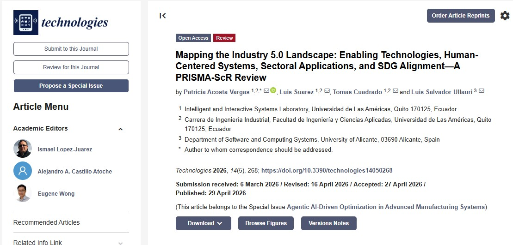

Luis Fernando Suárez Alcívar
Estandarizando el presente, automatizando el futuro con IA y datos
Conecto investigación, tecnologías emergentes y sostenibilidad para comprender cómo la Industria 5.0 puede crear sistemas más humanos, resilientes y alineados con los ODS.
Sobre mí
Soy profesional con triple certificación Lean Six Sigma Black Belt (AIGPE, SSAA y Quality Gurus Inc.) y una visión clara: eliminar ineficiencias, acelerar decisiones y convertir procesos complejos en ventajas competitivas medibles.
He impulsado mejoras en manufactura y servicios, desde la estandarización de flujos críticos ISO 9001 en CIAUTO hasta una reducción del 25% en tiempos de entrega en UDLA. Mis herramientas integran BPMN, Bizagi, Celonis, analítica, IA y productividad digital para conectar la visión estratégica con una ejecución precisa.
Industry 5.0
Investigación
IA e IoT
Sostenibilidad
Enfoque profesional
Investigo la transición desde modelos centrados en automatización hacia ecosistemas industriales donde la tecnología aumenta las capacidades humanas.
Certificados
Ver LinkedInPublicaciones científicas

Technologies 2026, 14(5), 268
Mapping the Industry 5.0 Landscape: Enabling Technologies, Human-Centered Systems, Sectoral Applications, and SDG Alignment - A PRISMA-ScR Review
Revisión de acceso abierto publicada el 29 de abril de 2026. El estudio revisa 52 artículos revisados por pares y mapea tecnologías habilitadoras como IA, robótica colaborativa, IoT y gemelos digitales dentro de sistemas humano-céntricos.
Mapping the Industry 5.0 Landscape: Enabling Technologies, Human-Centered Systems, Sectoral Applications, and SDG Alignment
Acosta-Vargas, P.; Suárez, L.; Cuadrado, T.; Salvador-Ullauri, L. Technologies, 14(5), 268.
Tecnologías habilitadoras para Industry 5.0
Interés académico en inteligencia artificial, IoT, cobots, digital twins y sistemas human-in-the-loop.
Alineación de sistemas industriales con ODS
Análisis de sostenibilidad, bienestar humano, resiliencia y transferencia de valor social.
Experiencia y logros
Ver hoja de vida1er lugar - INGENIALLS 2026
Reconocimiento expedido por la Facultad de Ingenierías y Ciencias Aplicadas (FICA), asociado con la Universidad de Las Américas. El logro refleja la aplicación rigurosa de QFD, trabajo colaborativo y una presentación con enfoque empresarial validada por profesionales graduados.
Proyecto de cooperación "Optimización de procesos" - ConQuito
Participación en el fortalecimiento de la eficiencia operativa y la mejora continua dentro de Pymes, aplicando herramientas Lean, diagnóstico de procesos y detección de áreas de mejora.
Coautor en Technologies
Publicación científica sobre el panorama de Industry 5.0, tecnologías habilitadoras, sistemas centrados en el humano, aplicaciones sectoriales y alineación con ODS.
Investigación académica
Trabajo vinculado a la Carrera de Ingeniería Industrial, Facultad de Ingeniería y Ciencias Aplicadas, Universidad de Las Américas, Quito.
Análisis y síntesis científica
Revisión sistemática, mapeo de literatura, lectura crítica de evidencia y comunicación clara de hallazgos para proyectos científicos.
Conecta en Instagram
Ver perfil completoContacto
Estoy abierto a colaboraciones académicas, proyectos de investigación, divulgación científica y oportunidades vinculadas a Industry 5.0.